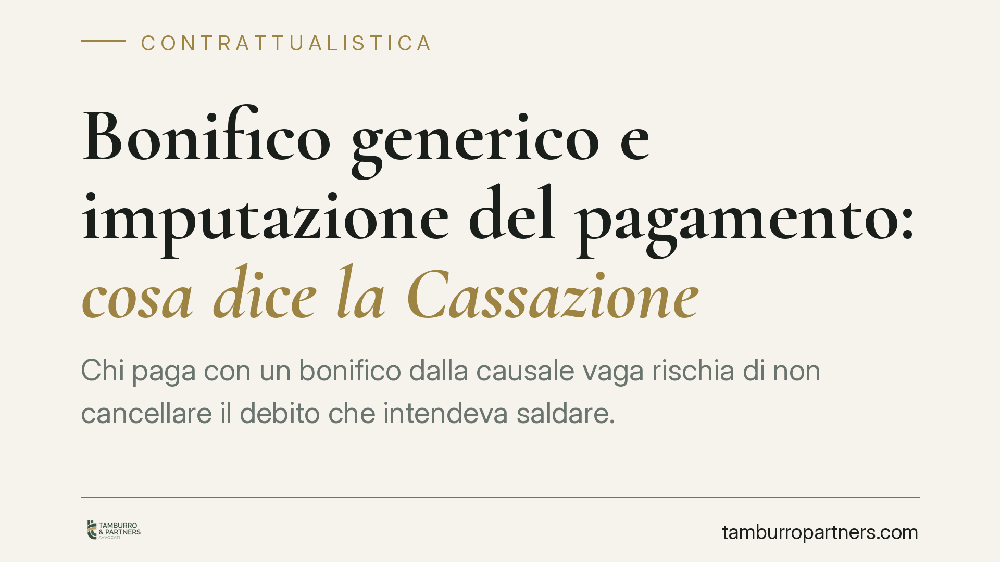

Bonifico generico e imputazione del pagamento: cosa dice la Cassazione
Chi paga con un bonifico dalla causale vaga rischia di non cancellare il debito che intendeva saldare. La Corte di Cassazione ha ribadito che spetta al debitore provare a quale credito il versamento si riferisce. Una regola che riguarda tanto chi deve onorare una parcella quanto chi deve incassarla, e che si gioca tutta nella causale.

Il caso
La vicenda nasce dal contenzioso tra un avvocato creditore e un patronato debitore. Quest'ultimo sosteneva di aver estinto il proprio debito tramite alcuni versamenti, ma la causale dei bonifici era generica: non indicava a quale specifica prestazione o fattura i pagamenti fossero destinati.
La Corte di Cassazione ha confermato l'impostazione della Corte d'Appello di Bari: un pagamento generico non estingue automaticamente il credito contestato. Quando esistono più rapporti di debito tra le stesse parti, è il debitore che deve dimostrare di aver imputato il versamento a quel determinato credito.
Inquadramento normativo
Il riferimento è l'art. 1193 c.c., che disciplina l'imputazione del pagamento quando il debitore ha più debiti verso lo stesso creditore. Il primo comma attribuisce al debitore il diritto di scegliere, al momento del pagamento, quale debito intende soddisfare. Questa scelta si esercita proprio attraverso la causale del versamento.
Se il debitore non esercita questa facoltà, interviene il secondo comma con i criteri suppletivi, in ordine gerarchico. Il pagamento si imputa:
- al debito scaduto, a preferenza di quello non ancora scaduto;
- tra più debiti scaduti, a quello meno garantito;
- tra debiti ugualmente garantiti, a quello più oneroso per il debitore;
- tra debiti ugualmente onerosi, a quello più antico;
- in mancanza di questi criteri, in proporzione a tutti i debiti.
Va distinta l'ipotesi in cui sia il creditore a imputare il pagamento tramite quietanza: in tal caso opera l'art. 1195 c.c. Se il debitore accetta senza riserve la quietanza in cui il creditore ha dichiarato di imputare il pagamento a un determinato debito, non può più pretendere un'imputazione diversa, salvo dolo o sorpresa.
Sul piano probatorio, la Corte richiama l'art. 2697 c.c.: chi afferma l'estinzione di un'obbligazione deve provarne i fatti costitutivi. Qui il fatto da provare non è solo l'avvenuto pagamento, ma la sua destinazione a quel preciso credito.
Implicazioni pratiche
Per il debitore, la lezione è netta: pagare non basta, bisogna pagare bene. Un bonifico con causale "acconto" o "saldo" senza ulteriori specificazioni lascia spazio all'incertezza. In presenza di più fatture o più rapporti, il versamento generico potrà essere imputato dai criteri legali a un debito diverso da quello che si voleva estinguere, oppure l'estinzione invocata potrà non essere riconosciuta.
Per il creditore, la posizione è speculare e tendenzialmente favorevole: di fronte a pagamenti dalla causale indeterminata, può far valere i criteri dell'art. 1193, co. 2, oppure la propria imputazione in quietanza ex art. 1195. Resta però esposto a contestazioni se la documentazione contabile dei rapporti non è ordinata e tracciabile.
Il principio ha portata generale e non riguarda solo le parcelle professionali: vale per forniture ricorrenti, somministrazioni, rapporti di conto corrente e ogni situazione in cui più obbligazioni coesistono tra le stesse parti.
Cosa fare in concreto
- Indicare sempre una causale specifica nel bonifico: numero e data della fattura, numero del contratto o descrizione precisa della prestazione pagata.
- Conservare le ricevute di pagamento insieme ai documenti del rapporto cui si riferiscono, per ricostruire l'imputazione in caso di contestazione.
- Verificare le quietanze ricevute: se il creditore vi imputa il pagamento a un debito diverso da quello voluto, è opportuno formulare riserva per iscritto prima di accettarle.
- Definire fin dal contratto un criterio di imputazione dei pagamenti, è opportuno, quando si prevedono versamenti frazionati o rapporti continuativi.
- Tenere una contabilità dei rapporti ordinata, soprattutto per il creditore con più crediti verso lo stesso debitore, così da sostenere l'imputazione in giudizio.
La differenza tra un debito estinto e un debito ancora dovuto può ridursi a poche righe di causale. Curarle è il modo più semplice per prevenire un contenzioso.
Disclaimer
Contributo informativo a cura di Tamburro & Partners - Avv. Giuseppe Tamburro. Non costituisce parere legale.
Ogni contratto ha il suo equilibrio.
Se vuoi una revisione delle clausole o una redazione su misura, scrivi allo studio. Ti rispondiamo entro un giorno lavorativo.